Controlled Systems Lab · #1012 · functional first pass
Native model tracking, with every state retained
This report shows executed closed-loop observations after the full-state QP and plant-step records passed independent dynamics and objective checks. Each panel belongs to one model and task; panels are not performance comparisons.
Scope: all 35 catalogue records were attempted. Thirty-two completed and passed independent checks; three were refused by HiGHS because their unchanged source matrices contain nonzero values at or below the adapter's 1e-12 removal threshold. Failures remain in the raw capture. The run is numerical and nominal; it is not calibration evidence, a robust guarantee or a nonlinear stability claim.
Checked full-state dynamics transitions: 429. The saved trajectories contain all state coordinates before projection. Download checked full-state observed trajectories · Per-model objectives and replay costs · Independent checks · Immutable capture manifest · Model source catalogue.
Objective and realized-cost values belong to their separately authored task profiles. Their scales differ across models and they are not a cross-model ranking.
Executed trajectories
Each curve joins observed state samples at indexed steps. Labels show sample order. The display projects only after checking all state coordinates and every applied transition against the original model matrices.
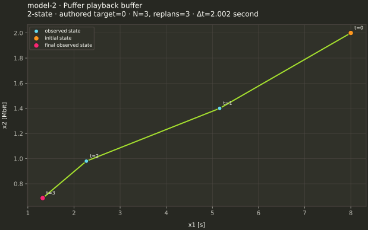
authored nominal tracking profile · observed samples=4 · state axes: x1 [s], x2 [Mbit]
Source: Owner-supplied research catalogue (2026); SHA-256 6c5e7c1b09331186b8cd9ddfcd1a71afbc7bddb438a103f2fd4dcfdf780c081e
Source qualification and locator
synthetic local no-stall linearization. State order: b [s],z [Mbit throughput-error smoothing]. Control order: r [s/download],s [Mbit]. Delivered whole segments, stalls and actual r from network need hybrid/nonlinear model; cross-coordinate coefficients carry units.
Owner archive, card 2; printed decimal matrices
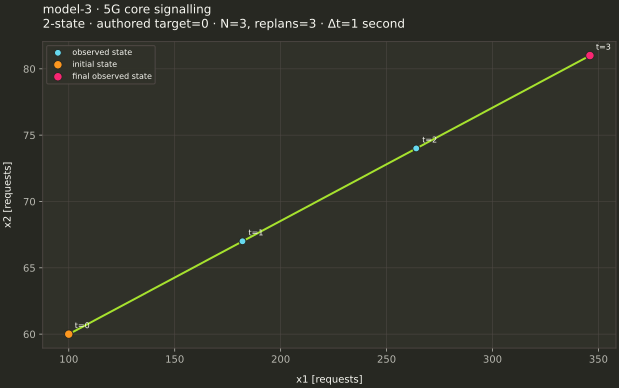
authored nominal tracking profile · observed samples=4 · state axes: x1 [requests], x2 [requests]
Source: Owner-supplied research catalogue (2026); SHA-256 6c5e7c1b09331186b8cd9ddfcd1a71afbc7bddb438a103f2fd4dcfdf780c081e
Source qualification and locator
test service coefficients, ORIGAMI operating scenarios. State order: q_reg,q_pdu [requests]. Control order: c1,c2 [equivalent CPU cores]. Define service availability at before/after arrivals; integer cores versus continuous equivalents explicit. G is a discrete per-step state-increment channel, not an identified physical force map.
Owner archive, card 3; printed decimal matrices
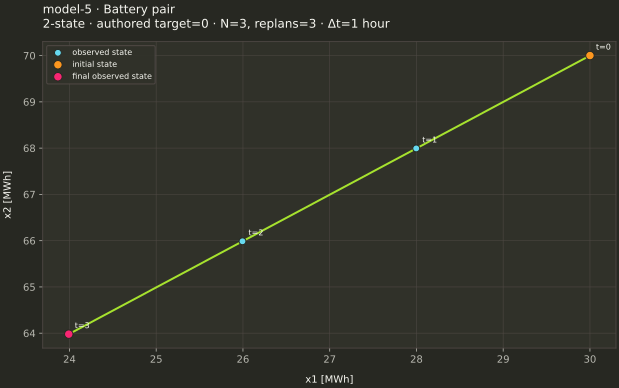
authored nominal tracking profile · observed samples=4 · state axes: x1 [MWh], x2 [MWh]
Source: Owner-supplied research catalogue (2026); SHA-256 6c5e7c1b09331186b8cd9ddfcd1a71afbc7bddb438a103f2fd4dcfdf780c081e
Source qualification and locator
chosen capacities/efficiencies; Chile curtailment as external context. State order: E1,E2 [MWh]. Control order: charge1,discharge1,charge2,discharge2 [MW]. Use printed rounded coefficients literally. Simultaneous charge/discharge forbidden only in separately authored complementarity/integer variant. G=0 makes supplied disturbance ineffective.
Owner archive, card 5; printed decimal matrices
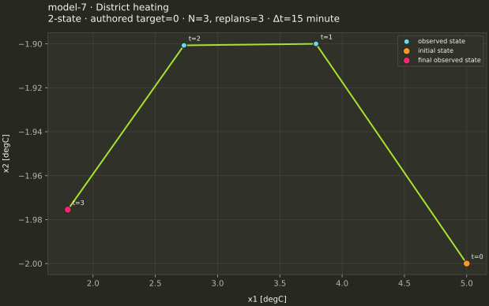
authored nominal tracking profile · observed samples=4 · state axes: x1 [degC], x2 [degC]
Source: Owner-supplied research catalogue (2026); SHA-256 6c5e7c1b09331186b8cd9ddfcd1a71afbc7bddb438a103f2fd4dcfdf780c081e
Source qualification and locator
illustrative local linearization, geometry calibration absent. State order: dT_supply,dT_return [degC]. Control order: heat,flow [normalized]. Disturbance names outside temperature/demand lack channel scaling/units.
Owner archive, card 7; printed decimal matrices
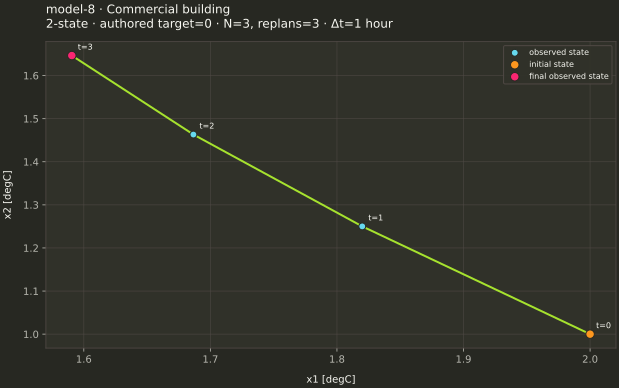
authored nominal tracking profile · observed samples=4 · state axes: x1 [degC], x2 [degC]
Source: Owner-supplied research catalogue (2026); SHA-256 6c5e7c1b09331186b8cd9ddfcd1a71afbc7bddb438a103f2fd4dcfdf780c081e
Source qualification and locator
illustrative model; Building Data Genome energy/weather only. State order: dT_air,dT_wall [degC]. Control order: HVAC,ventilation [normalized]. Wall bound not supplied; HVAC interventions generally unavailable.
Owner archive, card 8; printed decimal matrices
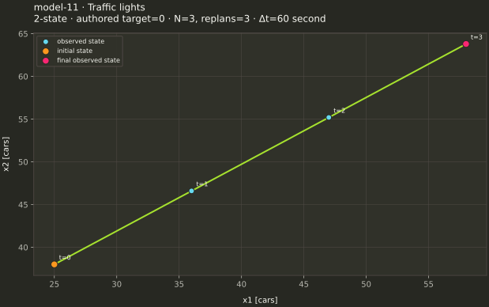
authored nominal tracking profile · observed samples=4 · state axes: x1 [cars], x2 [cars]
Source: Owner-supplied research catalogue (2026); SHA-256 6c5e7c1b09331186b8cd9ddfcd1a71afbc7bddb438a103f2fd4dcfdf780c081e
Source qualification and locator
chosen turning fraction .6, linear queue model. State order: q1,q2 [cars]. Control order: s1,s2 [cars serviced/step]. Card omits lower queue bound numerically though physical q>=0 required; saturation, spillback, phases and availability timing need explicit extension. G is a discrete per-step state-increment channel, not an identified physical force map.
Owner archive, card 11; printed decimal matrices
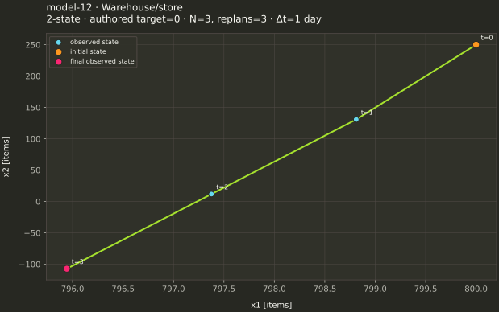
authored nominal tracking profile · observed samples=4 · state axes: x1 [items], x2 [items]
Source: Owner-supplied research catalogue (2026); SHA-256 6c5e7c1b09331186b8cd9ddfcd1a71afbc7bddb438a103f2fd4dcfdf780c081e
Source qualification and locator
constructed chain, M5 retail demand. State order: I_warehouse,I_store [items]. Control order: production,shipment [items/step]. Lead times and integer inventory not specified; no overshipping.
Owner archive, card 12; printed decimal matrices
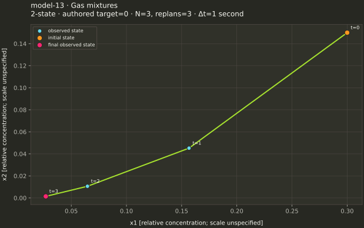
authored nominal tracking profile · observed samples=4 · state axes: x1 [relative concentration; scale unspecified], x2 [relative concentration; scale unspecified]
Source: Owner-supplied research catalogue (2026); SHA-256 6c5e7c1b09331186b8cd9ddfcd1a71afbc7bddb438a103f2fd4dcfdf780c081e
Source qualification and locator
illustrative concentration model; UCI sensor outputs not these states. State order: c1,c2 [relative concentration; exact scale absent]. Control order: f1,f2 [normalized flow]. Nonlinear sensor map and ageing channel absent. G=0 prevents supplied additive disturbances.
Owner archive, card 13; printed decimal matrices
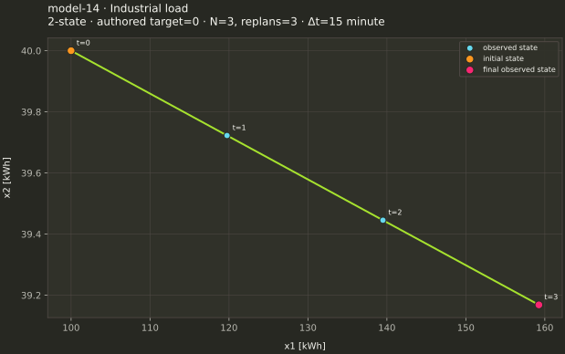
authored nominal tracking profile · observed samples=4 · state axes: x1 [kWh], x2 [kWh]
Source: Owner-supplied research catalogue (2026); SHA-256 6c5e7c1b09331186b8cd9ddfcd1a71afbc7bddb438a103f2fd4dcfdf780c081e
Source qualification and locator
chosen flexibility/battery parameters, UCI loads. State order: e_backlog,e_storage [kWh]. Control order: p_shift,p_store [kW]. Backlog nonnegativity not written; storage has charge-only control. Second disturbance column zero.
Owner archive, card 14; printed decimal matrices
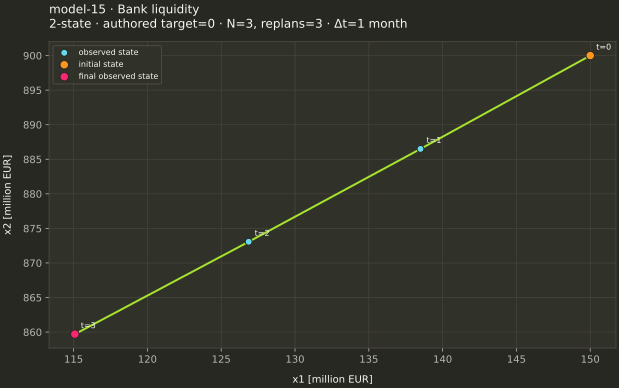
authored nominal tracking profile · observed samples=4 · state axes: x1 [million EUR], x2 [million EUR]
Source: Owner-supplied research catalogue (2026); SHA-256 6c5e7c1b09331186b8cd9ddfcd1a71afbc7bddb438a103f2fd4dcfdf780c081e
Source qualification and locator
hypothetical causal coefficients; BIS/ECB aggregates. State order: L,C [million EUR]. Control order: funding,origination [million EUR/month]. No single-bank intervention identification; credit lower bound not explicitly written.
Owner archive, card 15; printed decimal matrices
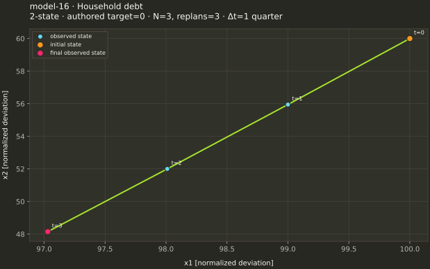
authored nominal tracking profile · observed samples=4 · state axes: x1 [normalized deviation], x2 [normalized deviation]
Source: Owner-supplied research catalogue (2026); SHA-256 6c5e7c1b09331186b8cd9ddfcd1a71afbc7bddb438a103f2fd4dcfdf780c081e
Source qualification and locator
hypothetical policy channels, BIS DSR aggregates. State order: D,Y [normalized deviations]. Control order: new_credit,relief [scale unspecified]. Deviations with nonnegative bounds need declared baseline; no causal effect established. G is a discrete per-step state-increment channel, not an identified physical force map.
Owner archive, card 16; printed decimal matrices
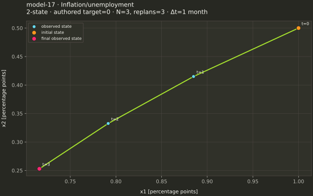
authored nominal tracking profile · observed samples=4 · state axes: x1 [percentage points], x2 [percentage points]
Source: Owner-supplied research catalogue (2026); SHA-256 6c5e7c1b09331186b8cd9ddfcd1a71afbc7bddb438a103f2fd4dcfdf780c081e
Source qualification and locator
illustrative reduced form, FRED observed macro series. State order: inflation_gap,unemployment_gap [percentage points]. Control order: interest_rate_gap [percentage points]. Endogeneity, lags and causal identification unresolved; not policy advice. G is a discrete per-step state-increment channel, not an identified physical force map.
Owner archive, card 17; printed decimal matrices
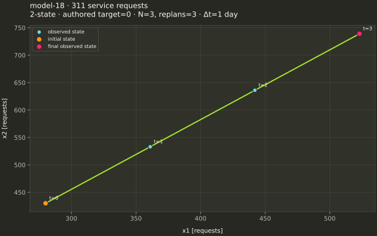
authored nominal tracking profile · observed samples=4 · state axes: x1 [requests], x2 [requests]
Source: Owner-supplied research catalogue (2026); SHA-256 6c5e7c1b09331186b8cd9ddfcd1a71afbc7bddb438a103f2fd4dcfdf780c081e
Source qualification and locator
assumed crew productivity, NYC closures not labor hours. State order: q_roads,q_housing [open requests]. Control order: crew1,crew2 [crews]. Availability timing, integer crews and queue lower bound need declared variant. G is a discrete per-step state-increment channel, not an identified physical force map.
Owner archive, card 18; printed decimal matrices
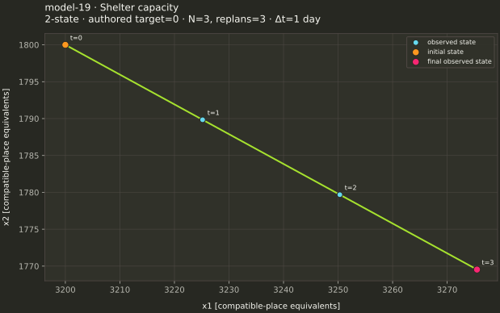
authored nominal tracking profile · observed samples=4 · state axes: x1 [compatible-place equivalents], x2 [compatible-place equivalents]
Source: Owner-supplied research catalogue (2026); SHA-256 6c5e7c1b09331186b8cd9ddfcd1a71afbc7bddb438a103f2fd4dcfdf780c081e
Source qualification and locator
constructed compatible capacity transfers, DHS aggregates. State order: N_family,N_single [occupied compatible-place equivalents]. Control order: capacity_reassignment_fs,sf [equivalents/step]. Sum(x) uncontrolled except sum(w); cannot interpret as moving families to incompatible accommodation. Nonnegative lower bound omitted. G is a discrete per-step state-increment channel, not an identified physical force map.
Owner archive, card 19; printed decimal matrices
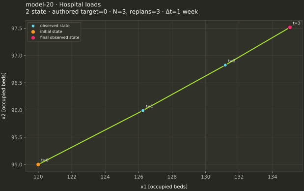
authored nominal tracking profile · observed samples=4 · state axes: x1 [occupied beds], x2 [occupied beds]
Source: Owner-supplied research catalogue (2026); SHA-256 6c5e7c1b09331186b8cd9ddfcd1a71afbc7bddb438a103f2fd4dcfdf780c081e
Source qualification and locator
demonstration retention, CDC aggregates and restricted MIMIC context. State order: h1,h2 [occupied beds]. Control order: t12,t21 [eligible patient transfers/step]. Transfers preserve instantaneous total but unequal retention makes full pair controllable. Eligibility/available-patient constraints absent; not for clinical use. G is a discrete per-step state-increment channel, not an identified physical force map.
Owner archive, card 20; printed decimal matrices
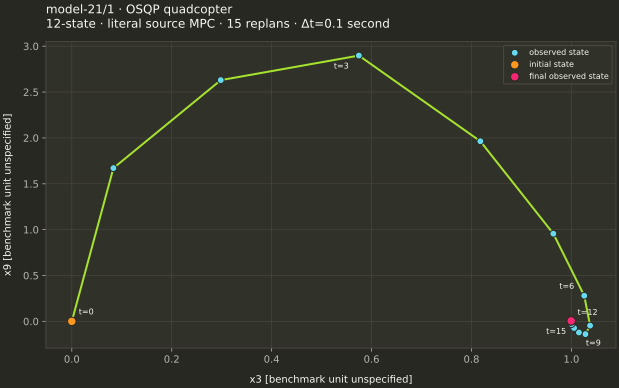
source21 literal source task · observed samples=16 · state axes: x3 [benchmark unit unspecified], x9 [benchmark unit unspecified]
Source: Owner-supplied research catalogue (2026); SHA-256 6c5e7c1b09331186b8cd9ddfcd1a71afbc7bddb438a103f2fd4dcfdf780c081e
Source qualification and locator
published source. State order: benchmark x[0..11], semantic coordinate names/units not specified by official page. Control order: delta actuator signals [official numeric unit unspecified]. Official A/B/x0 and full MPC cost; G=I is catalogue extension, not OSQP wind model. G is a discrete per-step state-increment channel, not an identified physical force map. A/B follow the official OSQP MPC example; its nominal task fixes this catalogue-added G channel to zero.
Owner archive, card 21; model_21_A/B/G/x0 in the numerical supplement
Task definitions
Source21: literal OSQP MPC example, horizon 10, running and terminal state costs, control costs and printed bounds; 15 observed-state replans; original source task adapter and independent literal cost evaluator.
Other completed cases: separately authored nominal task to zero; fixed three-stage horizon repeated at three observed-state replans; state weights 1/max(1,|x0_i|)^2, terminal weight five times state weight, R=0.02I, recorded-coordinate actuator bounds [-1,1], and no state bounds. A supplied nominal external vector is folded with E into the affine term; absent one, fixed external zero is declared and source E is retained in catalogue data.
Original model labels, source hashes, coordinate names and units are in the saved catalogue records. Controllability/rank caveats and source assumptions remain attached to the source qualification text for each model.
Reproduce
cmake -S examples -B build -DCSL_DIR=$CSL_PREFIX/lib/cmake/CSL -DCMAKE_BUILD_TYPE=Release
cmake --build build --parallel 1 --target native_model_tracking native_discrete_models quadcopter_mpc
python scripts/reports/native_model_tracking_first_pass.py --build build
python scripts/reports/verify_native_model_tracking_first_pass.py <capture> --retry <capability-retry>
python scripts/reports/render_native_model_tracking_first_pass.py --capture <capture> --catalogue <catalogue-metadata-capture> --checks <independent-checks>Set CSL_PREFIX to a clean installed build exposing the three targets. The saved executable SHA-256 and the running-history library archive hash are in each capture manifest. The component archive is identified separately; no whole-SDK qualification is claimed here.